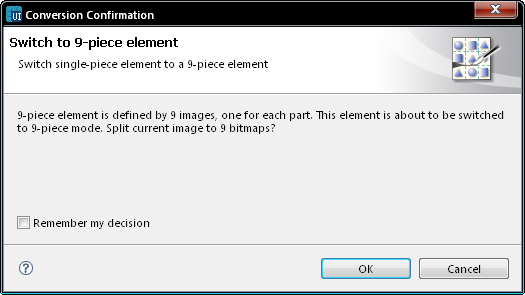
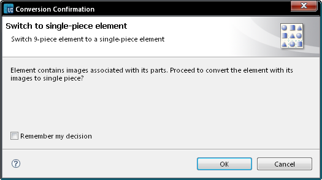

Switching between a 9-piece element and a single-piece element
Some components can be
either 9-piece bitmap graphics or individual single-piece svg graphics.
The
9-piece component consists of four corner graphics, four side graphics,
and a center graphic. You can design the corner graphics individually.
The side and center area graphics can be tiled or equal the maximum
size of the component area.
Slice a component into nine pieces:
- In the Editor,
right-click a screen component and select Switch to 9-Piece element.
- The Action confirmation window opens and prompts you to confirm
if the image can be sliced and converted into a bitmap image, if
required.
- If you want Carbide.ui to remember your decision, mark the
checkbox.
- Click OK.

Figure: Switch to 9-piece
element
Note: In the Layers view, you
see that the image is sliced into a component consisting of nine parts.
Note: If you now edit the
center area graphic and reduce its size, the image is automatically
tiled to be the size of the center area.
Switch back to a single-piece element:
- In the Editor, right-click the icon and select Switch to Single-Piece element.
- The Replace confirmation window opens and prompts you to confirm
if the image can be replaced with the current visible image.
- If you want Carbide.ui to remember your decision, mark the
checkbox.
- Click OK.

Figure: Switch to single-piece
element
In the Layers view, you see that the image consists of a single part.
Note: If you paste into the
clipboard a selection of 9 image files , for example from file system,
the images can then be pasted into a 9-piece element in a single step.
The first file is 'top-left' piece in the 9-piece element, the second
piece is 'top-middle', the third is 'top-right', fourth is
'middle-left', fifth is 'middle-center', and so on. So the default
order is from left to right, from top to bottom. This makes the ninth
piece the 'bottom-right' piece.